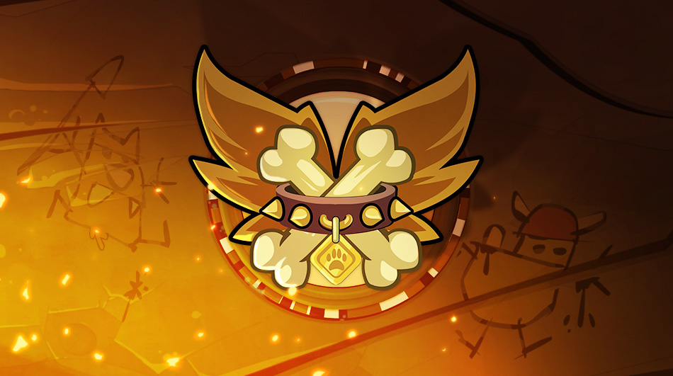
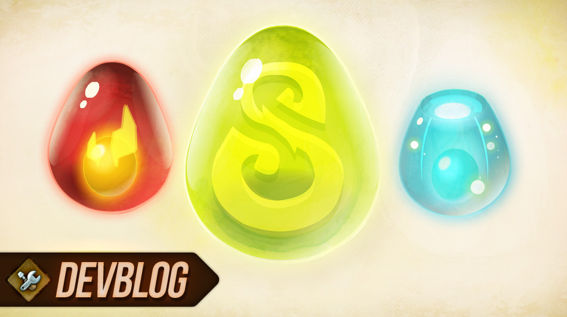

New DOFUS :
La nouvelle classe Ouginak sera disponible pour tous les joueurs dans la mise à jour 2.40.
Dans la mise à jour 2.40, nous avons décidé d'améliorer les bonus de huit Dofus pour les rendre plus compétitifs vis-à-vis des trophées.
New Guilde :